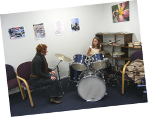
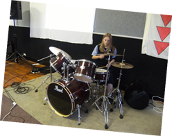

Rock School has been running for several years, teaching young people how to play the drums. My involvement this year has been to expand the school to include bass guitar and electric guitar as well as teaching musicianship in a band context.
This was a skills based role for me because I have had a lot of experience in playing and teaching all of the instruments we were expanding Rock School to incorporate. I could easily establish a plan for how we could acheive our goals and communicate with the tutors that we got in to teach each instrument. By the end of the year we had received funding for four guitars and two bass guitars as well as an amplifier to compliment our three drum sets and PA setup. We have just completed our end of year JAM and had 18 students attend with six tutors.
 I hope to expand on the success next year by getting the graduating students to come back next year and teach the beginners. Unfortunately this style of program is dependant on skilled volunteers and the long term sustainability of this program could be difficult to maintain. Not just anyone can teach an instrument which is unfortunate because if Rock School grows we would need some highly skilled volunteer musicians.
I found teaching new bass players an interesting experience. Many of the students had never seen a bass before or knew what a bass did. This was evident in the way that they held the bass and tried to play it. I very quickly realised how my teachers must have felt when I didn't practice and in this process learnt how to be patient.